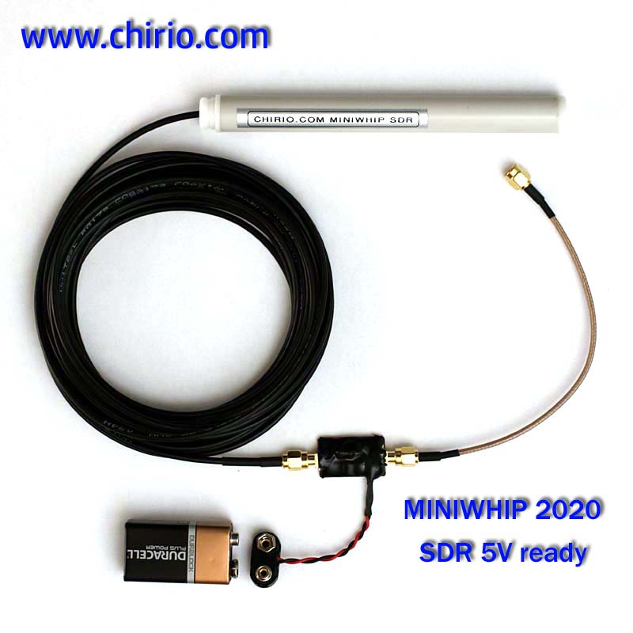
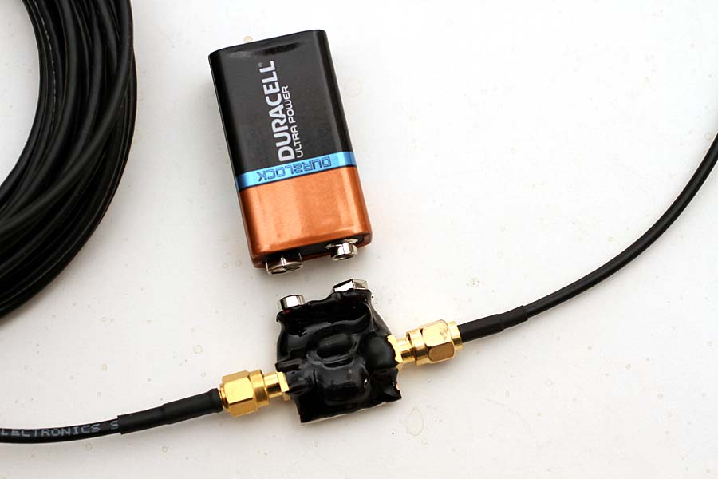
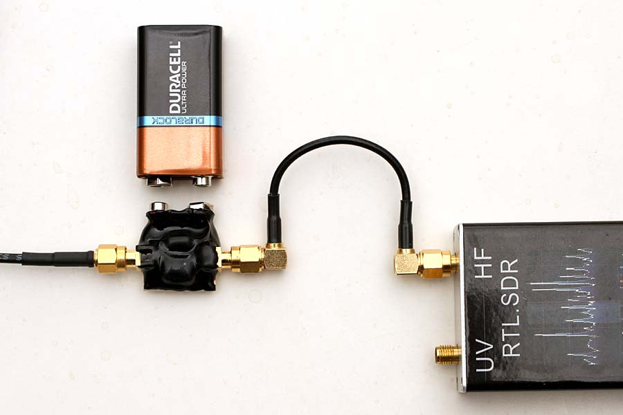
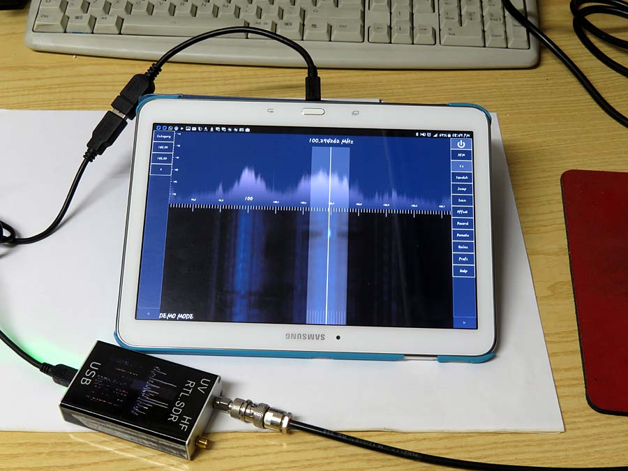
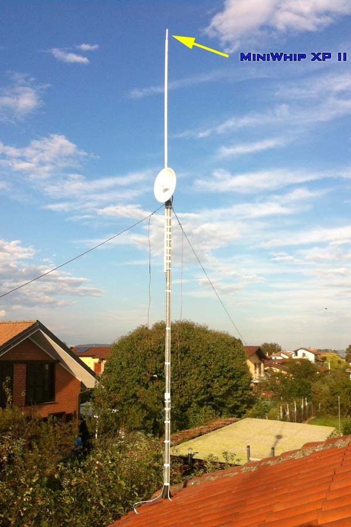
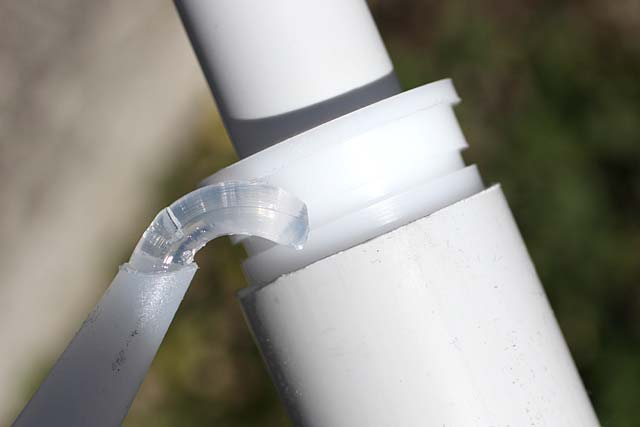
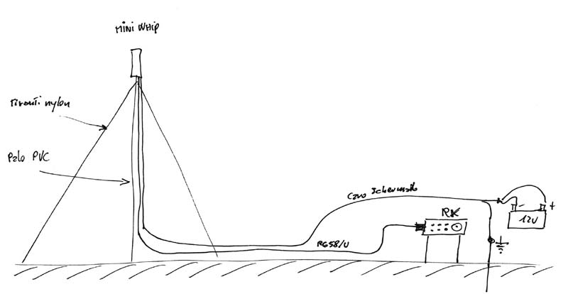

Radio & antennas
Chirio Mini Whip SDR
Active antenna for frequencies 10 kHz - 30 MHz
Page index
May 2017
This MiniWhip is made to meet the needs of all users of SDR receivers connected to PC.
The characteristics are those of the MiniWhip SR for portable scanners, but in this configuration the antenna can be mounted externally using a 16mm PVC pipe as support.
The tube can be easily positioned on balconies, terraces and also just outside a window. This configuration is very suitable for mounting on campers and why not also outside a tent.
Power supply always with 9V battery is via coaxial, using the same signal cable, so everything is very convenient and compact.

Characteristics
- With 9V battery the current draw is approximately 15mA.
- Bandwidth from 10 kHz to 30 MHz (-10dB), at -50dB reception is still up to 150 MHz
- Output impedance is 200 ohm suitable for pretty much all receiver inputs.
- Base version with 6m of RG174 cable
- Power Feeder with SMA-F connector input and output + built-in 9V battery connector.
- Without Power Feeder it is possible to power 5V directly from SDR prepared.
Signal present on Chirio Mini-Whip, you can see all frequencies from 0 to 20 MHz. The signal is stronger and many stations come through that are not listenable with a conventional wire antenna. Very strong all signals down to a few tens of kHz. The antenna was mounted outside the house on a 3mt PVC pole.


- Power Feeder with input/output SMA connector, the size is very small and everything can be positioned near the Receiver.
- In this configuration, no ground connection is needed to remove interference since we do not have a separate power cable.

- The MiniWhip SDR group can easily be fitted into a 16mm PVC pipe, optionally some silicone glue allows you to stop and seal the whole thing.
- The antenna must always be positioned outside, away from metal obstacles, the PVC tube/pole can also be positioned horizontally when vertical is not possible, important at least 2 meters away from the metal part of the balcony terrace.

- The simple connection between the Power Feeder and the SDR input, in this case it is connected to the HF input, with the MiniWhip it is possible to listen to strong signals up to 150 MHz by connecting to the UV input.
{kind=link}
- Excellent signals on 40 m, on the left the lower part of the band where CW communications are clearly visible, while on the right beyond 7.060 MHz various LSB voice communications
RTL.SDR connection with Samsung Tablet 10.1

- the RTL.SDR works in connection with Tablet, but there are still no drivers for direct sampling, so only the UV input works i.e. from 30 to 1700 MHz, it's not possible to tune HF.
It is convenient to bring the Tablet out of the house and see all VHF/UHF communications via the Waterfall.
{kind=link}
Tips for mounting the MiniWhips:
- Position the antenna high, minimum 4 meters away from cables and electrical sources, for feedline RG58/U cable is fine, even for lengths of 15-30meters. Good results can also be obtained with 75 ohm TV cables or shielded audio cables.
- The higher you go, the more the antenna gains on the signal. Roughly a height of 10-12 meters gives an increase of +10dB compared to 2 meters.
- There are no significant differences in using an iron or plastic pole, since the coaxial cable descending has the same characteristics as a metal pole... important that it be small diameter with nylon guy wires.
- It is important to have a good ground connection, ideally dedicated only to this antenna and not making a common point with the house system. A 1 meter long iron pole driven into moist soil works fine, the connection to the antenna must be as short as possible, avoid loops and long cable runs.
- A better ground would be achieved with 4 steel/copper stakes driven into moist soil where rain gutters or garden tap water drain. Connect the 4 poles with 16mm copper cable and bring with a single cable to a common terminal block, ground everything including the roof metal structures, copper gutters and iron poles.
- Avoid as much as possible interference sources near the antenna, such as neon/LED lamps, electrical cables, brushed motors.

- As shown in the photo to hold the MiniWhip XP II in place on the 32 mm PVC tube, use transparent silicone, other more stubborn glues could block the bushing too much for any removals.
- The silicone also prevents water and rain from entering the PVC tube protecting the BNC connectors and power supply.
- It is always advisable to position the MiniWhip in vertical position even if operation is good also in horizontal position.


- The drawing illustrates how to best position the Mini Whip XP II with double descent.
- The PVC pole must be positioned away from obstacles such as walls, fences and tall trees.
- Use nylon tie cables like fishing line or braid.
- Run cables on the ground to avoid RF ingress
- By grounding the shielded power cable, generally the noise is reduced.
- To avoid burning the FET at the input, all MiniWhips must be kept at least 10 meters from a transmitting antenna.
Listening tips: stations, bands, frequencies, times and seasons.
- Italian Association for Radio Reception http://www.air-radio.it/
- International Shortwave Broadcast Bands http://www.hamuniverse.com/shortwavebandfreqs.html
- RADIO NEW ZEALAND INTERNATIONAL http://www.rnzi.com/pages/listen.php
- Manuals and diagrams for radio amateurs, CB and BCL http://www.radiomanual.eu/
© Roberto Chirio: all rights reserved.